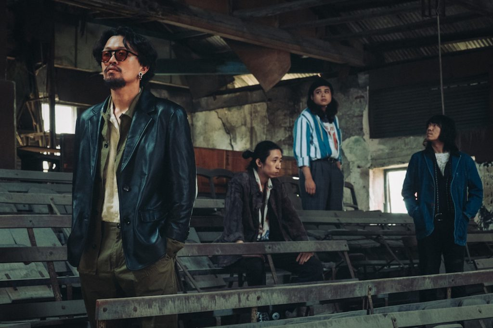

無妄合作社 No-nonsense Collective
「無妄合作社 No-nononsense Collective」自2016年1月成立，由主唱郭力瑋、吉他手謝秉男、貝斯手謝碩元、鼓手邱孝齊所組成。樂團成立之初即受邀至東京高円寺的「No Limit 東京自治區」演出；2017年7月，又與愁城的朋友們獨立舉辦「愁城鬧事」DIY倉庫音樂派對，皆獲得好評。
無妄合作社的音樂受啟發自香菸焦油、林間野味與都市廢氣，嘗試在並不盡然令人愉快的社會境況中，既沉溺其中又欲掙脫文明的枷鎖。曲風以龐克為基底，融合藍調、民謠、雷鬼與油漬，並略具indie-pop的元素，在強烈的高低起伏中運用隱喻通向幽暗處，側寫著磨損的稜稜角角，供作悲傷的時候歡笑、輕浮的時候往下墜。